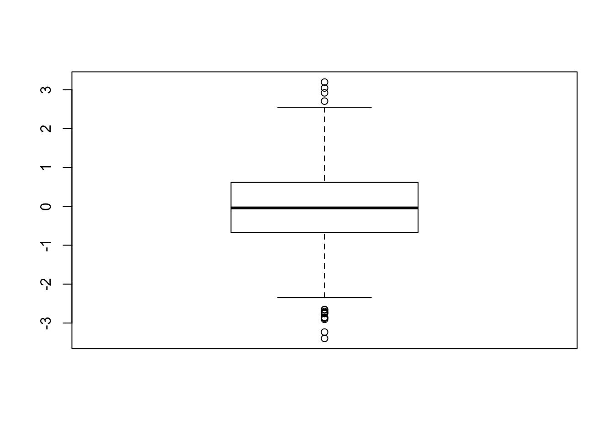
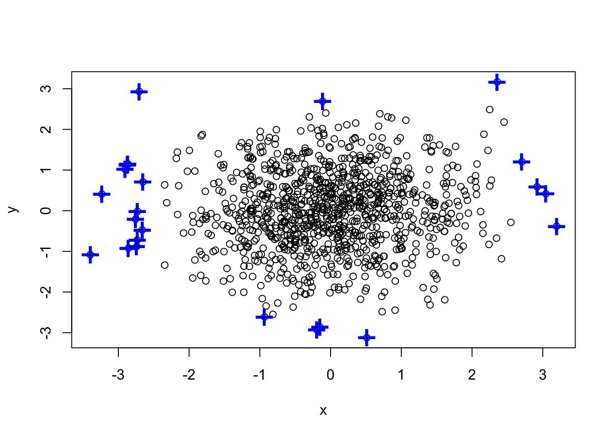
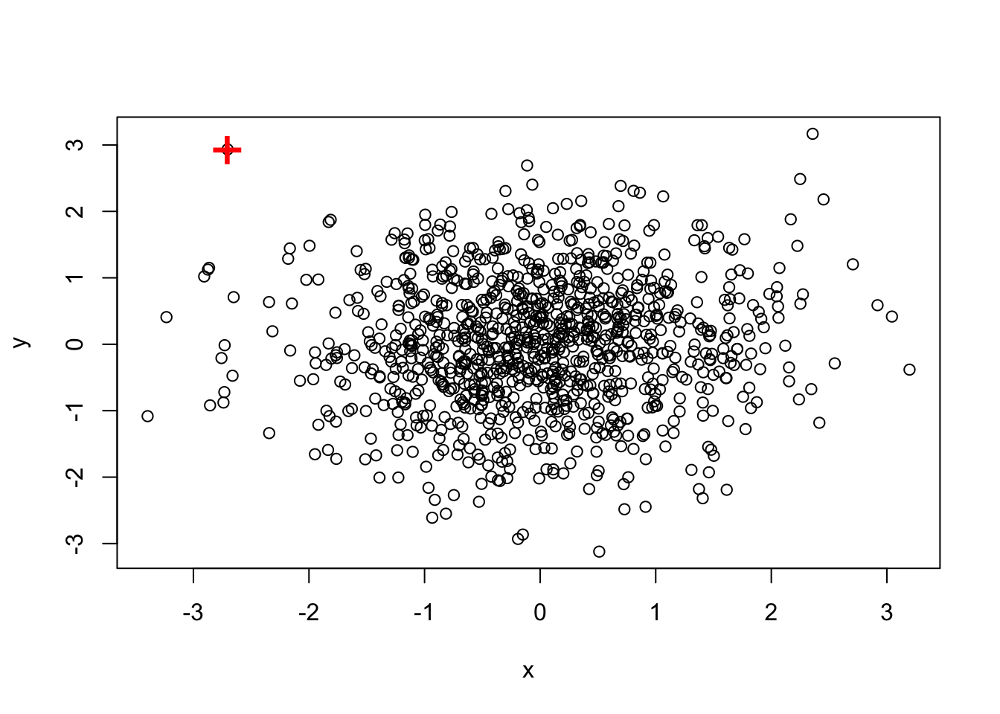
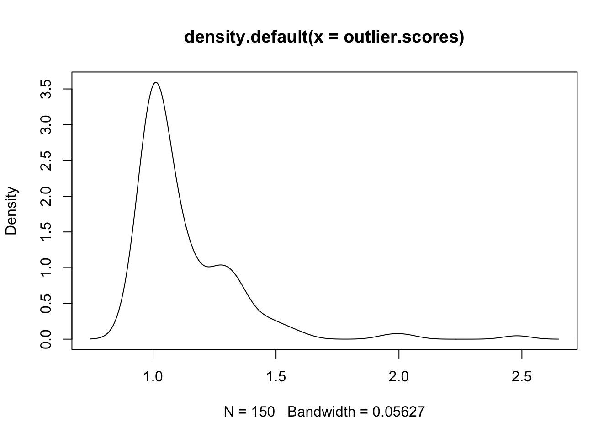
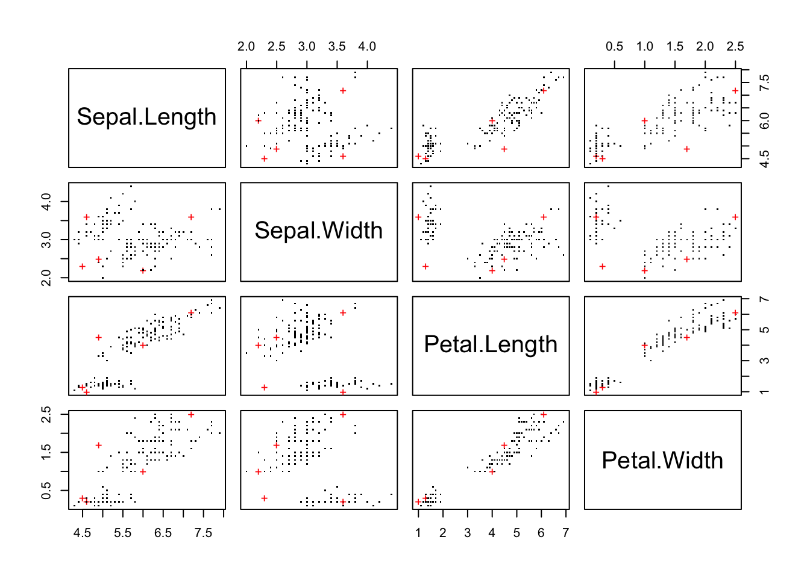

For univariate outlier analysis we can use the boxplot:
set.seed(1234)
x <- rnorm(1000)
summary(x)## Min. 1st Qu. Median Mean 3rd Qu. Max.
## -3.39600 -0.67330 -0.03979 -0.02660 0.61580 3.19600# get the outliers
boxplot.stats(x)$out## [1] 3.043766 -2.732220 -2.855759 2.919140 -3.233152 -2.651741 -3.396064
## [8] 3.195901 -2.729680 -2.704203 -2.864347 -2.661346 2.705775 -2.906674
## [15] -2.874042 -2.757050 -2.739754boxplot(x)
We can use again the boxplot separetely in every dimension and get the union or the intersect of the points that have been identified as outliers in at least one dimension by boxplot.
y <- rnorm(1000)
df <- data.frame(x,y)
rm(x,y)
head(df)## x y
## 1 -1.2070657 -1.2053334
## 2 0.2774292 0.3014667
## 3 1.0844412 -1.5391452
## 4 -2.3456977 0.6353707
## 5 0.4291247 0.7029518
## 6 0.5060559 -1.9058829attach(df)
(a <- which(x %in% boxplot.stats(x)$out))## [1] 178 181 192 227 237 382 392 486 487 517 558 717 771 788 901 949 967(b <- which(y %in% boxplot.stats(y)$out))## [1] 121 233 317 359 517 660 815detach(df)(outlier.list1 <- union(a,b))## [1] 178 181 192 227 237 382 392 486 487 517 558 717 771 788 901 949 967
## [18] 121 233 317 359 660 815plot(df)
points(df[outlier.list1,], col="blue", pch="+", cex=2.5) ### Intersect
(outlier.list2 <- intersect(a,b))## [1] 517plot(df)
points(df[outlier.list2,], col="red", pch="+", cex=2.5)
Local Outlier Factor anomaly detection algorithm can be found in package DMwR. The k argument denotes the number of neighbors that will be used in the calculation of the LOFs.
library(DMwR)
fulldata <- iris[,-5]
outlier.scores <- lofactor(fulldata, k=5)
plot(density(outlier.scores))
Now lets print the top-5 outliers based on their LOF score:
outliers <- order(outlier.scores, decreasing = T)[1:5]
print(outliers)## [1] 42 107 23 110 63And plot them:
pch <- rep(".", nrow(fulldata))
pch[outliers] <- "+"
col <- rep("black", nrow(fulldata))
col[outliers] <- "red"
pairs(fulldata, col=col, pch=pch)
One more thing we can do is do a k-means clustering and define as outliers the top n points that are the most distant from their center.
clustering <- kmeans(fulldata, centers=3)
centers.matrix <- clustering$centers[clustering$cluster, ]
distances <- sqrt(rowSums((fulldata - centers.matrix)^2))
# pick top 2 largest distances
outliers <- order(distances, decreasing=T)[1:2]
# print the outliers
print(outliers)## [1] 99 58The DBSCAN method identifies outliers as an end result of running the algorithm in the dataset.